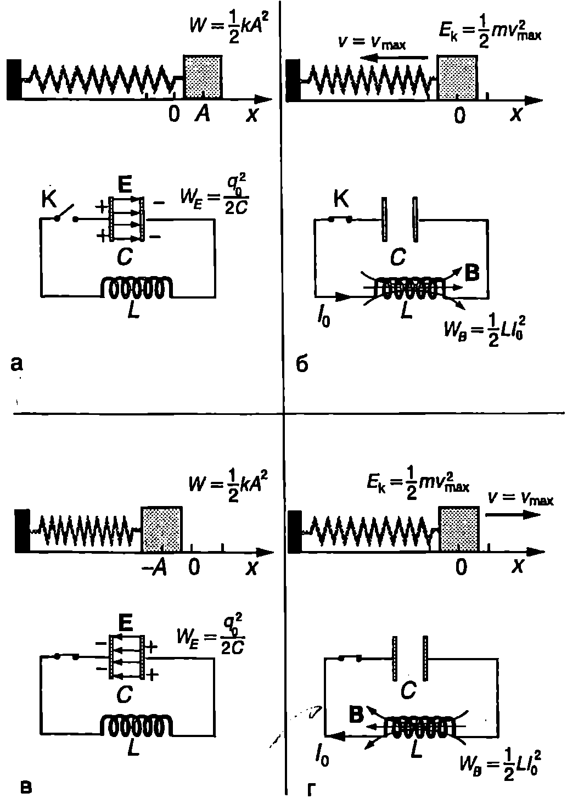
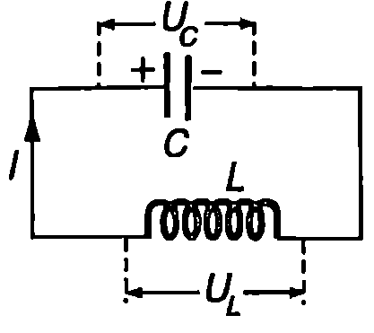
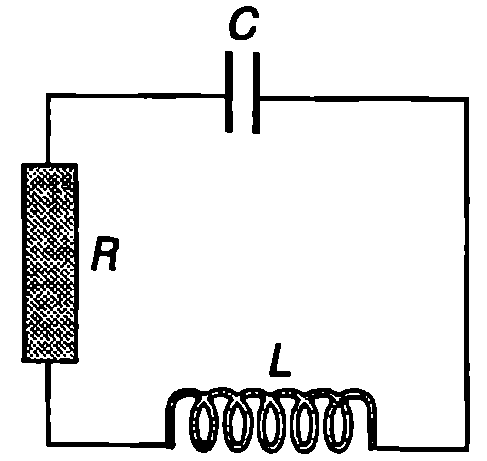
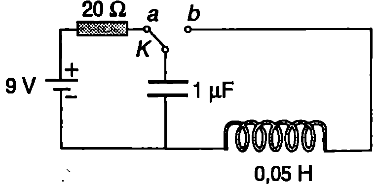
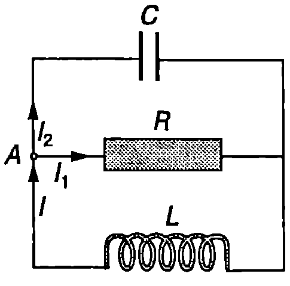

Процеси в LC-кръг
На Фиг. \ref{fig:82.1} е показана електрическа верига, съставена от кондензатор с капацитет и намотка с индуктивност . Ще смятаме, че диелектрикът, с който е запълнен кондензаторът, има безкрайно голямо съпротивление (идеален кондензатор), а съпротивлението на проводника, от кой то е навита намотката, е пренебрежимо малко (идеална намотка). При тези условия кондензаторът и намотката образуват идеален -кръг. Кондензаторът е зареден със заряд ключът К е отворен (Фиг. \ref{fig:82.1}а). В момента затваряме ключа К. Започва процес на разреждане на кондензатора през намотката. В намотката се индуцира ЕДН, което съгласно с правило то на Ленц се противопоставя на нарастването на тока във веригата. Затова токът

`Фиг. 82.1`
Аналогия между електромагнитните трептения и механичните трептения.
I нараства постепенно и достига максималната си стойност , когато кондензаторът е изцяло разреден (Фиг. \ref{fig:82.1}б). След това токът намалява, а кондензаторът започва да се презарежда с обратна полярност. Съществени са два фактора: 1. вече натрупаните върху кондензатора в процеса на презареждане заряди създават електрично поле, което отблъсква пристигащите нови заряди и води до намаляване на големината на тока; 2. в намотката се индуцира ЕДН, което се противопоставя на намаляването на тока, т.е. стреми се да го поддържа. Съвместното действие на двата фактора води до постепенно намаляване на тока, който става нула, когато кондензаторът се зареди с първоначалния заряд само че с противоположна полярност (Фиг. \ref{fig:82.1}в). След това протича ток в обратната посока, който достига максималната си стойност при разреден кондензатор (Фиг. \ref{fig:82.1}г) и намалява до нула, при което се възстановява началното състояние на -кръга (Фиг. \ref{fig:82.1}а). По този начин физичните величини, които характеризират процесите в -кръга извършват един пълен цикъл на изменение (трептене). След това процесите се повтарят.
Преобразуване на енергията
Ще проследим изменението на енергията в LC-кръга и ще направим аналогия с изменението на енергията при хармоничното механично трептене. В началния момент t = 0 енергията на LC-кръга е равна на енергията на електричното поле на заредения кондензатор На Фиг. \ref{fig:82.1}а за сравнение е пружинно махало, което е максимално отклонено от равновесното си положение. Неговата енергия е При разреждането на кондензатора енергията на електричното поле намалява, но нараства енергията на магнитното поле на тока през намотката, която достига максимална стойнойст при разреден кондензатор () Следователно при нарастване на електричната енергия се превръща в магнитна енергия и обратно: когато токът намалява, магнитната енергия се превръща в електрична енергия. Аналогичен процес протича при механичните трептения: когато скоростта нараства, потенциалната енергия се преобразува в кинетична енергия и обратно, намаляването на скоростта е съпроводено с преобразуване на кинетичната енергия в потенциална енергия.
Пълната енергия на -кръга в произволен момент от времето е
където и са моментните стойности на заряда върху кондензатора и на тока във веригата. Енергията при механично хармонично трептене е (вж. 571)
От сравняването на двата израза за енергията, както и от Фиг. \ref{fig:82.1}, стигаме до извода, че зарядът а върху кондензатора е аналог на отместването , а токът е аналог на скоростта При процесите в -кръга реципрочната стойност на капацитета е аналог на коефициента на еластичност к на пружината, а индуктивността - на масата при хармоничното механично трептене.
Хармонични електромагнитни трептения Ще покажем, че аналогията се разпростира и върху уравненията, описващи динамиката на процесите в -кръга. Ще смятаме процесите за квазистационарни (вж. \ref{sec:61}) и ще прилагаме правилата на Кирхоф за моментните стойности на тока и напреженията във веригата. Избираме за положителна посоката на тока, който зарежда кондензатора (Фиг. \ref{fig:82.2}), и прилагаме правилото на Кирхоф за токовия контур: , където е напрежението върху кондензатора, а е самоиндуцираното в намотката електродвижещо напрежение. След заместване се получава

`Фиг. 82.2`
Моментната стойност на тока е равна на скоростта, с която се изменя зарядът върху кондензатора: откъдето . Заместваме производната в уравнение \eqref{eq:82.3} и получаваме
Ще припомним, че хармоничните механични трептения се описват с уравнението на хармоничния осцилатор (вж. \ref{sec:70})
Сравняването на двете уравнения показва, че изменението на заряда върху кондензатора се описва със същото диференциално уравнение, както отклонението при свободно незатихващо хармонично трептене. Следователно зарядът , подобно на отклонението , се изменя с времето по синусов закон
където е кръговата честота, а и са съответно амплитудата и началната фаза. Последните две величини, както при механичните трептения, се определят от началните условия. Напрежението върху кондензатора и токът във веригата се изменят по законите
където и , са съответно амплитудите на напрежението върху кондензатора и на тока във веригата.
Токът изпреварва по фаза напрежението върху кондензатора с , както скоростта изпреварва по фаза отклонението при хармонично механично трептене с .
И така, след внасяне на електромагнитна енергия в -кръг започват периодични процеси, при които характеризиращите ги физични величини се изменят с времето по синусов закон. Ето защо тези процеси се наричат хармонични електромагнитни трептения. Периодът на електромагнитните трептения в -кръг е
Трептенията в -кръг се наричат още свободни или собствени трептения, защо то се извършват без влияние на външни фактори и тяхната кръгова честота се определя единствено от параметрите и на трептящия кръг.
Пример 82.1
Периодът на свободните трептения на -кръг е ms. Определете индуктивността 1 на намотката, ако капацитетът на кондензатора е . \end{psexample}
Решение
Индуктивността 1 на намотката се определя от формула \eqref{eq:82.9} за периода на свободните електромагнитни трептения:
Затихващи електромагнитни трептения в RIC-кръг
Трептенията, които се извършват в идеален LC-кръг, са незатихващи. Реалните трептящи кръгове имат електрично съпротивление и при протичане на ток се отделя топлина. Поради топлинните загуби трептенията затихват.
На Фиг. \ref{fig:82.3} е показан трептящ кръг със загуби. Когато искаме да отчетем и съпротивлението на намотката, трябва на схемата да заменим реалната намотка с идеална намотка с индуктивност и свързан последователно с нея резистор със съпротивление . Съгласно с правилото на Кирхоф за токовия контур сумата от падовете на напрежението върху кондензатора () и резистора () е равна на самоиндуцираното в намотката ЕДН ():

`Фиг. 82.3`
откъдето след заместване на и получаваме
Полагаме , и стигаме до познатото уравнение на затихващ осцилатор
Следователно зарядът а се изменя по същия закон, както отклонението (вж. уравнение \eqref{eq:73.2} на стр.128) при затихващо трептене:
Кръговата честота на затихващите електромагнитни трептения е
В -кръг възникват затихващи трептения само ако подкоренната величина в уравнение \eqref{eq:82.13} е положителна, т.е. при
Съпротивлението се нарича критично съпротивление. Ако , кондензаторът се разрежда чрез апериодичен процес и трептения не възникват.
Доброкачественост
За затихващите електромагнитни трептения се въвежда величината доброкачественост (Q-фактор) по същия начин, както при затихващите механични трептения. В \ref{sec:73} показахме, че Q-факторът на трептяща система с малък коефициент на затихване е . За електромагнитните трептения в -кръг полагаме и за доброкачествеността на трептящия кръг получаваме
Следователно доброкачествеността на -трептящ кръг намалява при увеличаване на съпротивлението .
Пример 82.2
-кръг при съпротивление има доброкачественост . Пресметнете критичното съпротивление на трептящия кръг. \end{psexample}
Решение
Трептящият кръг има голяма доброкачественост, поради което можем да използваме формула \eqref{eq:82.15}. Критичното съпротивление се изразява с уравнение \eqref{eq:82.14}. От двете уравнения получаваме .
Задачи
-
Определете периода на свободните електромагнитни трептения в -кръг, съставен от кондензатор с капацитет и намотка с индуктивност .
-
Честотата на свободните електромагнитни трептения в -кръг е . Определете капацитета на кондензатора, ако намотката има индуктивност .
-
Идеален трептящ кръг е съставен от кондензатор с капацитет и намотка с индуктивност . Определете максималната стойност на тока във веригата, ако максималното напрежение върху кондензатора е .
-
В трептящ кръг се извършват незатихващи електромагнитни трептения, при които максималният заряд на кондензатора е , а максималният ток през намотката . Колко е собствената кръгова честота на трептящия кръг?
-
В електрическата верига, показана на Фиг. \ref{fig:82.4}, ключът дълго време е бил в положение . След като ключът се постави в положение , определете: а) честотата на електромагнитните трептения; б) максималния заряд на кондензатора; в) максималния ток през намотката.

`Фиг. 82.4`
6. Идеален трептящ кръг е съставен от намотка с индуктивност и кондензатор с капацитет . Определете интервала от време от момента, когато енергията на кондензатора е нула, до момента, в който енергията на електричното поле на кондензатора стане равна на енергията на магнитното поле на тока през намотката.
-
Колко ома е критичното съпротивление на трептящ кръг, съставен от намотка с индуктивност и кондензатор с капацитет ?
-
Определете -фактора на трептящ кръг с коефициент на затихване , където е собствената кръгова честота на трептящия кръг.
-
Трептящ кръг е съставен от кондензатор с капацитет , намотка с индуктивност и резистор със съпротивление . Определете броя на трептенията, след които максималният заряд на кондензатора ще намалее пъти.
-
Трептящ кръг е съставен от кондензатор с капацитет и намотка с индуктивност . Определете съпротивлението на намотката, ако доброкачествеността на трептящия кръг е .
-
Определете честотата на затихващите електромагнитни трептения в трептящия кръг, показан на Фиг. \ref{fig:82.5}. При какви стойности на съпротивлението са възможни трептения?

`Фиг. 82.5`
Указание. Приложете правилата на Кирхоф за двата контура от Фиг. \ref{fig:82.5} и за възловата точка и получете уравнение от вида \eqref{eq:82.11}.